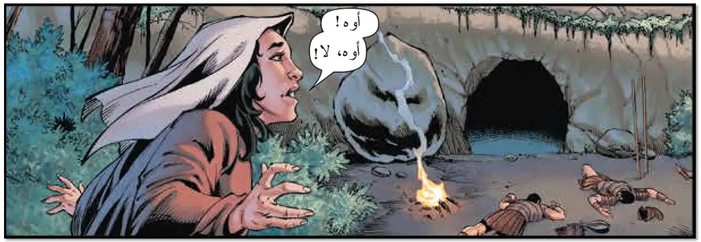
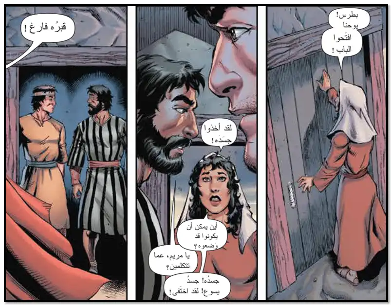
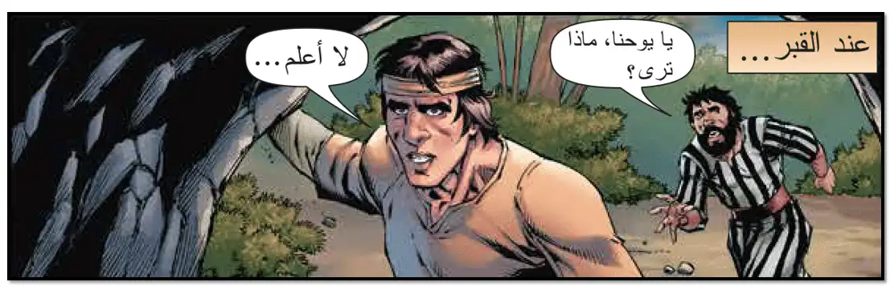
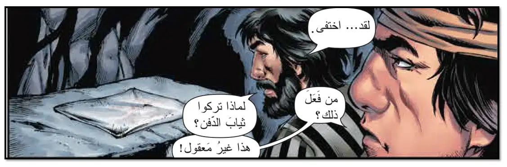
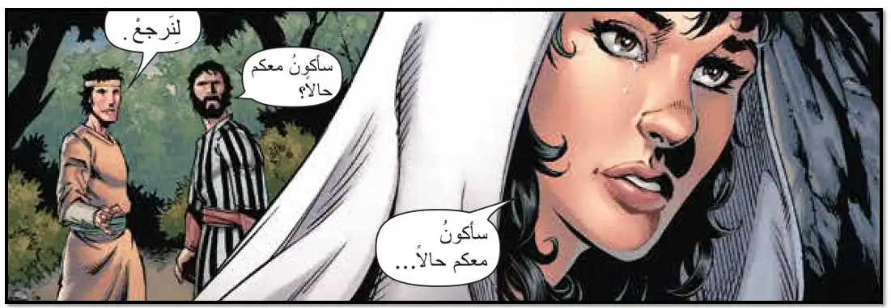
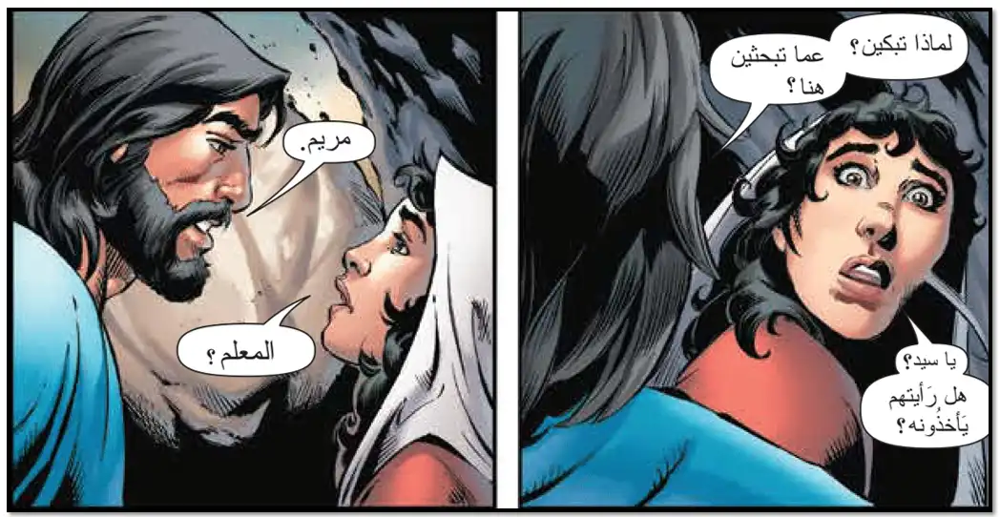
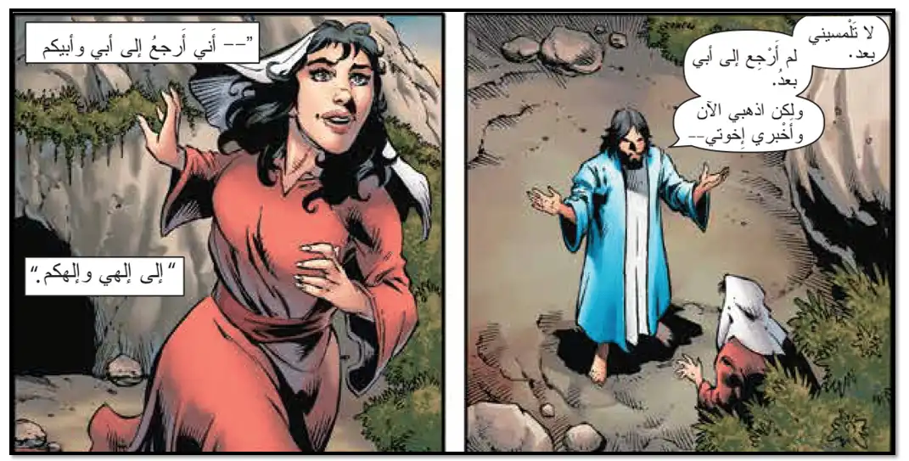

| إنجيل قداس عيد القيامة |
| يقول الشماس مقدمة المزمور |
| من مزامير وتراتيل ابينا داود النبي والملك الطاهر، بركاته على جميعنا امين |
| ( 117 : 23 - 25 ) |
|
هَذا هُوَ اليَوْمُ الذي صَنعَهُ الرَّبُّ: فَلْنبْتَهِجْ ونفْرَحْ بهِ. يارَبُّ تُخَلِّصُنا، يارَبُّ تُسَهِّلُ طُرُقَنا: اللَّهُ الرَّبُّ أضاءَ عَلينا. |
| في ختام المزمور يقول الشعب |
| الليلويا |
| يقول الشماس مقدمة الانجيل |
| مبارك هو الأتى باسم الرب، ربنا والهنا ومخلص نفوسنا كلنا ربنا يسوع المسيح ابن الله الحى لذى له المجد الدائم |
| يقول الشعب |
| الى الابد آمين |
| من إنجيل مُعلِّمنا يوحنا البشير ( 20 : 1 - 18 ) |
|
 وَفي الأحَدِ ( أوَّلِ الأُسْبُوعِ ) جَاءَتْ مَرْيَمُ الْمَجْدَلِيَّةُ إلى الْقَبْرِ بَاكِراً، وَالظَّلاَمُ بَاقٍ. فَرَأَتِ الْحَجَرَ مَرْفُوعاً عَنْ بَابِ الْقَبْرِ. فَأَسْرَعَتْ وَجَاءَتْ إلى سِمْعَانَ بُطْرُسَ وَإلى التِّلْمِيذِ الآخَرِ الَّذِي كَانَ يَسُوعُ يُحِبُّهُ، وَقَالَتْ لَهُمَا: " " قَدْ أَخَذُوا سَيِّدنا مِنَ الْقَبْرِ، وَلَسْتُ أَعْلَمُ أَيْنَ وَضَعُوهُ! ". فَخَرَجَ بُطْرُسُ وَالتِّلْمِيذُ الآخَرُ وَأَتيا إلى الْقَبْرِ. وَكَانَا يُسْرِعَانِ كِلاَهُمَا مَعاً. فَرَكَضَ التِّلْمِيذُ الآخَرُ وَسَبَقَ بُطْرُسَ وَتقَدَّمَ أَوَّلاً إلى الْقَبْرِ، وَتطَلَّعَ إلى دَاخِلٍ وَرَأَى الأكْفَانَ مَوْضُوعَةً، وَلكِنَّهُ لَمْ يَدْخُلْ. ثُمَّ جَاءَ سِمْعَانُ بُطْرُسُ يَتْبَعُهُ، وَدَخَلَ الْقَبْرَ وَنَظَرَ الأكْفَانَ مَوْضُوعَةً، وَالْمِنْدِيلَ الَّذِي كَانَ عَلَى رَأْسِهِ لَيْسَ مَوْضُوعاً مَعَ الأكْفَانِ، بَلْ مَلْفُوفاً وَمَوْضُوعاً في ناحِيَةٍ وَحْدَهُ. فَحِينَئِذٍ دَخَلَ أيْضاً التِّلْمِيذُ الآخَرُ الَّذِي جَاءَ أَوَّلاً إلى الْقَبْرِ، وَرَأَى فَآمَنَ؛ لأنَّهُمْ لَمْ يَكُونُوا بَعْدُ يَعْرِفُونَ الْكِتَابَ: أنَّهُ يَنْبَغي لهُ أنْ يَقُومَ منْ بَيْنِ الأَمْوَاتِ. فَمَضَى التِّلْمِيذَانِ أيْضاً إلى مَوْضِعِهِمَا. أَمَّا مَرْيَمُ فَكَانتْ وَاقِفَةً عِنْدَ الْقَبْرِ خَارِجاً تَبْكِي. وَفِيمَا هِيَ تَبْكِي تَطَلَّعَتْ دَاخِلَ الْقَبْرِ، فَرَأَتْ مَلاَكَيْنِ بثِيَابٍ بِيضٍ جَالِسَيْنِ وَاحِداً عِندَ رَأْسِهِ وَالآخَرَ عِندَ رِجْليهِ، حَيْثُ كَانَ جَسَدُ يَسُوعَ مَوْضُوعاً. فَقَالاَ لَها: " يَا امْرَأةُ، مَا بَالُكِ تَبْكِينَ؟ ". فَقَالَتْ لَهُمَا: " إنَّهُمْ أَخَذُوا سَيِّدِي، وَلَسْتُ أَعْلَمُ أَيْنَ وَضَعُوهُ ". وَلَمَّا قَالَتْ هَذَا الْتَفَتَتْ إلى الْوَرَاءِ، فَنظَرَتْ يَسُوعَ وَاقِفاً، وَلَمْ تَعْلَمْ أَنَّهُ يَسُوعُ. فَقَالَ لَهَا يَسُوعُ: " يَا امْرَأَةُ، لِمَاذا تبْكِينَ؟ مَنْ تطْلُبينَ؟ ". فَظَنَّتْ أَنَّهُ الْبُسْتَانِيُّ، فَقَالَتْ لَهُ: " يَا سَيِّدِي، إنْ كُنْتَ أَنتَ قَدْ حَمَلْتَهُ فَأَعْلِمْنِي أَيْنَ وَضَعْتَهُ، وَأَنا آخُذُهُ " . قَالَ لَهَا يَسُوعُ: " يَا مَرْيَمُ " فَالْتَفَتَتْ هِيَ وَقَالَتْ لَهُ بالْعبْرَانِيةِ: " رَبُّوني! " الَّذِي تَفْسِيرُهُ: يَا مُعَلِّمُ. قَالَ لَهَا يَسُوعُ: " لا تَلْمِسِينِي لأنِّي لَمْ أَصْعَدْ بَعْدُ إلى أَبي. فَامْضِيْ إلى إخْوَتِي وَقُولِي لَهُمْ: إنِّي صَاعِدٌ إلى أبي الَّذِي هُوَ أَبُوكُمْ، وإلهي الَّذِي هُوَ إلَهُكُمْ " . فَجَاءَتْ مَرْيَمُ الْمَجْدَلِيَّةُ وَأَخْبَرَتِ التَّلاَمِيذَ: "إنِّي رَأيْتُ الرَّبَّ، وَأَنَّهُ قَالَ لي هَذَا" . |
| وفى نهاية قراءة الانجيل يقولون |
| والمجد لله دائمًا |